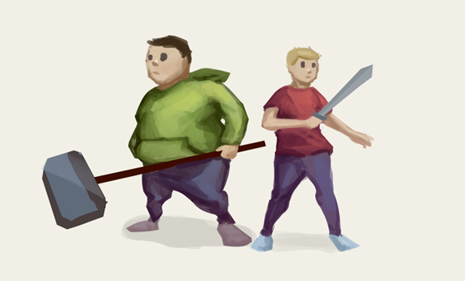
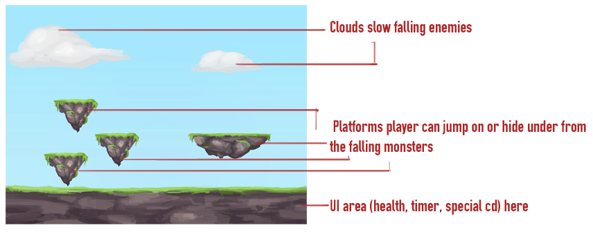
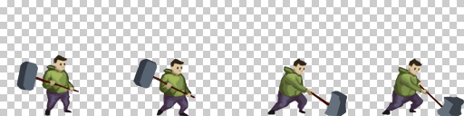
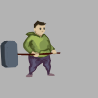
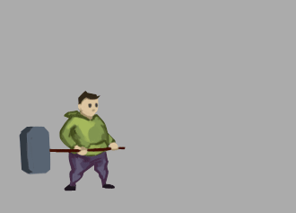
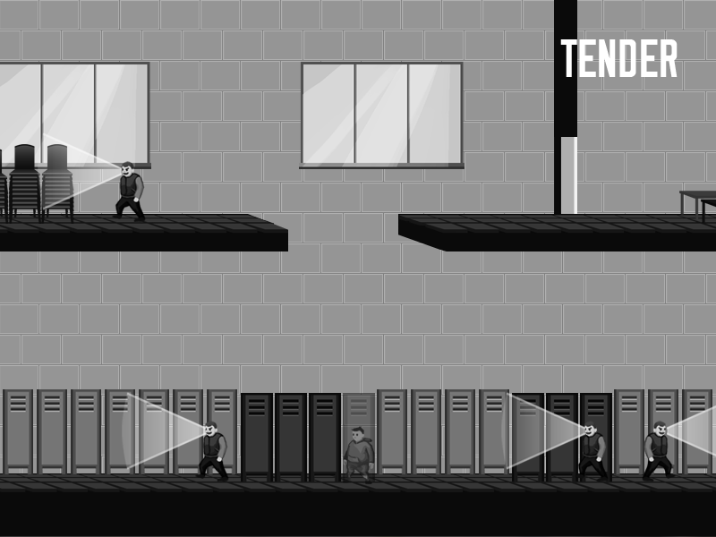
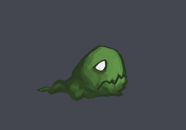
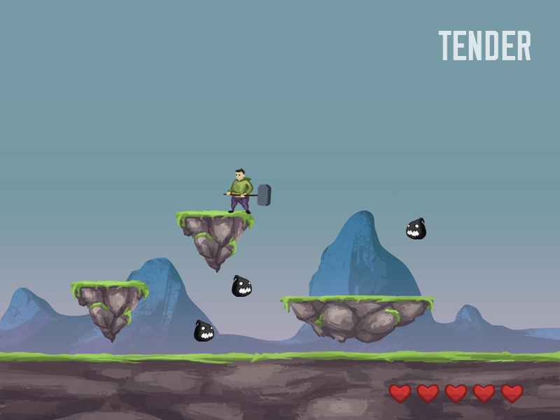
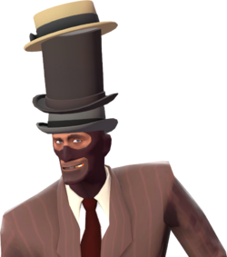
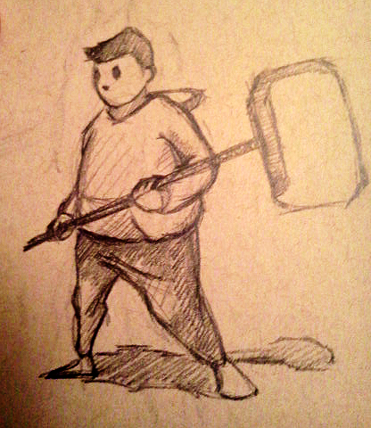

Making of Tender:
Around mid-summer 2013, I was inspired by a doodle drawn during lunch break to create a game. I quickly drew up a proposal and sent it off to a friend who also was interested in game development.
Original Doodle
The idea was simple: A static platformer stage where monsters fell from the sky and the player would have to survive and defeat the monsters. I took inspiration from games like Planet Puncher and Dragon Defense (A previous flash game of mine). While this concept seems boring, I knew my capabilities and understood it was key to start simple or risk never finishing a game. Depending on progress, the idea could easily lend itself to extensive features such as upgrades and more levels or skills.
Mockup of stage
Choosing our tools:
We had plenty of options, but not a lot of experience.
- Monogame
- Flash
- XNA
- Unity
However time constraints caused my friend to withdraw from the project. Left with all the responsibility, I switched back to Flash for 2 reasons:
- I was familiar with flash
- SWF files are easy to deploy on browsers
Art and Animation: I have a painting background so I was comfortable drawing stages and sprites. However, animation was a tricky beast I've never attempted. Flashpunk uses blitting, a frame by frame animation technique that uses a spritesheet to animate entities. Initially, I spent a lot of time creating many inbetween frames and treating each one like an individual painting. I soon learned the illusion of movement could be established with quick in betweens that followed the motion since each frame would be seen for less than a second, I could skip detail and let the player's mind fill in the gaps. Ground Attack Spritesheet
With a small sprite relative to screen, I found the player didn't feel significant and the animations seemed small. I reworked animations in an attempt to make movements a bit more exaggerated and bolder. An example of this is in the attack effects, the final attacks were bigger and felt more powerful. Old attack
Final attack
Coding: Coding was fairly straightforward. AS3 turned out to be extremely similar to other object oriented languages i.e. Java. FlashDevelop was a godsend. Compared to my previous trial experience with Adobe Flash Pro, Flashdevelop seemed to be more of an organized IDE strictly for coding without the hassle of that messy timeline. One mistake that cost me schedule time was not factoring how large the codebase eventually grew with over 70 classes and not organizing everything at first. I quickly learned to create modular, re-usable code; for example, there is an enemy superclass that handles the death and birth of every enemy since they all share the same fade-in effect and an animation death. Coding was the most grueling yet rewarding task: to implement something and watch it work beautifully in the game was amazing.
Game Design: Early on, I grew bored of the game's overly simplistic base. I wanted to add more of a narrative element rather than a pure arcade-like action game. I decided to contrast the heroic theme in classic action games and wove an unhappy narrative for the protagonist. This contrast is evident in the sharp divide between the alternating colorful levels of power and the black and white levels where the player was stripped of his ability to attack or fight. The b&w world consisted of different game mechanics: i.e. Stealth platforming
Ultimately, the game consisted of a total of 6 levels, mixing a variety of platformer mechanics from stealth, jumping, to fighting. The story became a prevalent part of the game and gave the character a unique personality which inspired the game's name Tender. There are 2 bosses and several enemies. It was released on newgrounds and kongregate, two popular flash game portals mid-november 2013 after about 5 months of work.
Lessons Learned:
The regretWith Tender being one of my first games, a lot of things went wrong and just as many mistakes were made.
Testing & feedback: This was probably my greatest mistake. After I became the sole developer, I was the only tester, artist, programmer and game designer. I made snap-calls and game design decisions such as adding a story on my own whim. I held the game locked inside my head. I didn't have any idea of how the average person would play the game. Only a few friends/family of which I can count on one hand, played the game before release. Their feedback was invaluable and it surprises me I didn't realize this and seek out more at the time. My brother complained how the character lagged after he had attacked. This was due to my animations playing many frames, I sped up the animations and voila the attacks suddenly felt responsive. I decided to omit a title screen partly because it seemed redundant and partly because of laziness. The game was simple enough to just jump in. However, the hosted game took longer to load on the flash portals and players most likely would click away instead of waiting on a blank slate. A loading and a menu screen would've let the players know they were beginning. In addition, a menu screen would have cemented it as a full game as I would later find out many people thought the entire game consisted of the fighting monsters on the first level. Contrary to belief, the game consists of more than the first level
After I released Tender, I discovered the game was extremely difficult. Having played it hundreds of times, I severely underestimated my skill level. Many people told me they ragequit or gave up on the second level. This was a big shock because I created Tender to be played completely in one sitting and to be experienced as a whole. It was saddening to realize that combined with people who lost interest in the first level, most players were seeing less than 30% of the game. In future games, I plan to start testing early and test often. Observing how new players react to and play the game is vital. I also believe Tender did not make a great initial impression causing many people to quit early. First impressions are everything and the first level instilled no hints towards progression or story.
Marketing/Exposure: Although Tender was always intended to be a small free game. Simply uploading the game onto newgrounds/kongregate garnered little attention. It sits at a whooping 2K views on newgrounds tying views with a game I created in a week to learn flash. Something is going seriously wrong. Along with making a stronger initial impression, I should've tried to promote the game further. While there are many factors out of my (or anyone's) control in making a game popular, developers should open themselves up to the opportunity to be noticed such as posting to TIG or blogging about the game.
So many hats
Too many hats: Yes, I can boast to my friends that I did everything myself, but at what cost? I would draw all day, even making concept pieces, and code all night. Despite my lack of musical skills, I ended up adding sound effects and scouring the internet for fitting music. I recall the last week where I scrambled to edit the sound and program it in. I had a constant headache from listening to the same tune or sound effect over and over. Juggling all the roles is exhausting; I eventually became drained and just wanted to be finished, causing me to cut corners like the menu. Being a sole developer is rough, especially if you have deadlines, in the future I will try to take more breaks.
What went well:
Art: I received a lot of compliments on the art style. I think drawing in a natural painterly style from my painting background worked out well. Dustforce was also a positive influence on Tender's style. you've come so farGoal Completed: Initially, I just wanted to make a simple game to just call finished. Tender became a lot more ambitious and unique as development went on. While the changes in concept and game design did slow down my schedule, it made the game much better. When I look back at the initial proposal, I discovered I didn't just complete my goal, I blew it out of the park.
Thanks for reading!
Play Tender (Newgrounds)
Go back to Projects Page